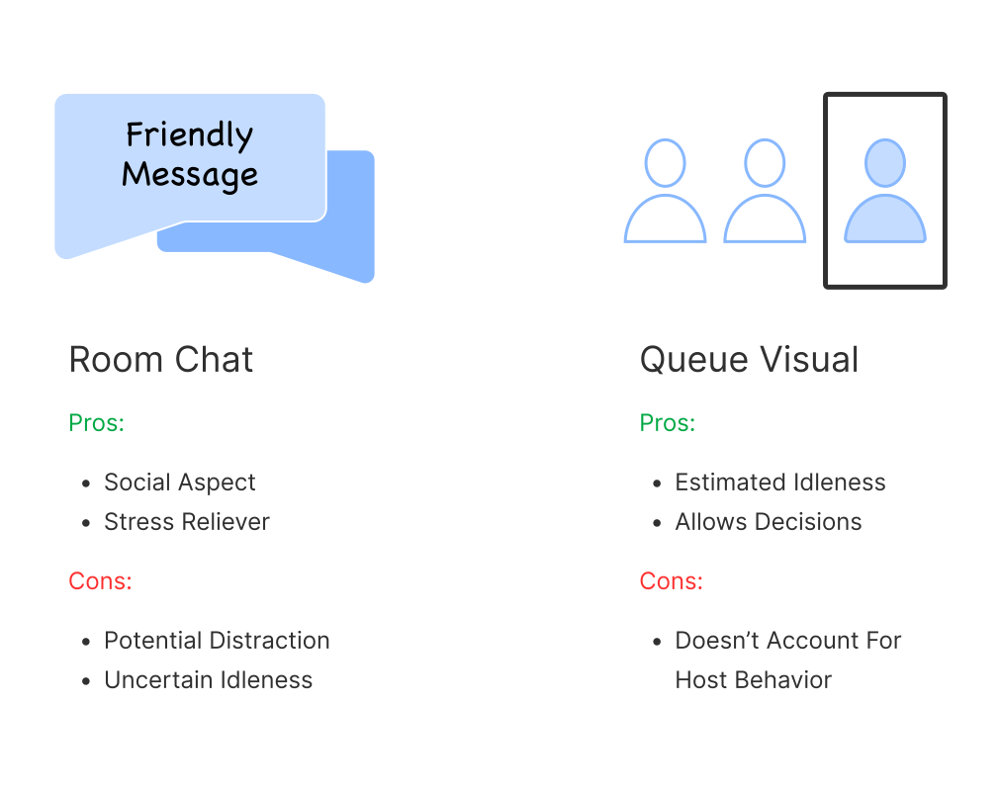
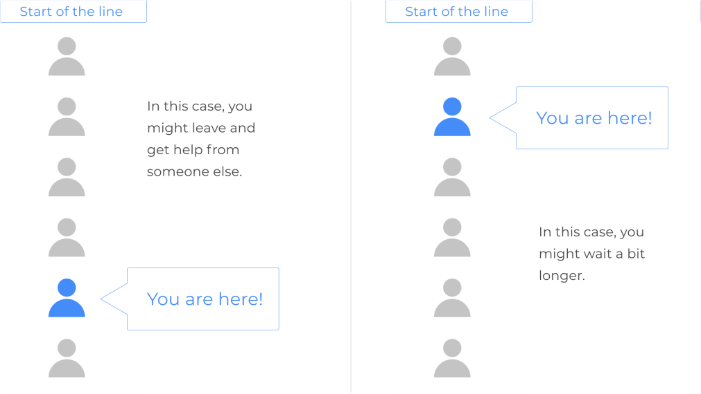

Teleport To:
I designed a solution to a problem my classmates and I were facing during drop-in office hours that occurred in the Zoom waiting room. I researched the users and the product to inform the decisions I made on the prototype screens. I am not associate with Zoom in anyway.
Figma, Miro
Mar 2021 (2 Weeks)
Recently, I went to a drop-in office hour to get help from a Teaching Assistant (TA). I remember being in the waiting room for a long time. Although other drop-in office hours were open, I was hesitant to leave.
I convinced myself I was at the front of the line. As such, if I waited longer, I would be admitted. On the other hand, if I left, I would have wasted time. There was no guarantee the other TAs were more available.
How many people before me? How long will I have to wait? These questions do not get answered so I would sit in limbo for hours.

I interviewed 17 people who have been in crowded drop-in office hours. I conducted these thirty minute interviews over text message as I waited in waiting rooms, which puts into perspective the long waiting times.

If a solution does exist, then my objective would shift to making that solution more discoverable. It’s better to take it slow than to jump to conclusions. Spoiler alert: I found none.

I learned about Zoom's design choices such as brand styles and toggle bars. Toggle bars were used to separate two different functions yet allowing easy navigation. If I was adding an additional feature, using a toggle bar would be the best way to do it because it maintains consistency.

An anonymous chat feature will allow attendees to socialize with other people in the waiting room and ease the stress of waiting. However, it may be a distraction. It also doesn’t solve the problem of unknown waiting durations.
A queue visual will provide attendees with an estimated waiting duration. It will allow people to make decisions on whether to leave or stay. However, the solution doesn’t account for the host’s behavior. A host may admit people in random order, defeating the purpose of having a queue visualization.
The most practical solution is the queue. Although the room chat has its upsides (like making the attendee feel less lonely due to the social aspect), it relies too heavily on the attendees’ participation, which may prove inconsistent.
Though the toggle bar was on my mind, I tested other UI elements to ensure that the toggle bar was the best option. Sketching allowed rapid visualization. I also experimented with the anonymous profile displays.

From the toggle bar to the font styles, I closely matched the UI of Zoom. Part of the waiting room's function is to keep attendees anonymous. As such, there are question marks on the profile cubes.


I handed the screens to 7 waiting room attendees. Although all attendees were thrilled with the new feature, some preferred having the queue visualization on the host messages space.
Hey, that sounds familiar! I sketched out the idea before! However, I felt it was too much information. Sure, maybe I go with a short sentence communicating the attendee’s place in the queue. But that would not be consistent with Zoom’s design language.
Because this was a feature addition project, conducting user research (although important) is not enough. The product needs to be analyzed because the design language can influence a new feature’s entire user experience.
If I could do this project over again, I would have created the screen with the queue visualization on the host message space and conducted an A/B test on a larger population of waiting room attendees.